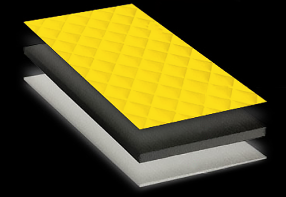

<section class="sostav" id="sostav">
  <div class="container sostav-container">
    <div class="title title-section title-invert">СОСТАВ МАТЕРИАЛА НАКИДОК</div>
    <div class="sostav__wrap">
      <div class="sostav__img"></div>
      <div class="sostav__info">
        <div class="sostav__title sostav_arrow-1">Верхний слой</div>
        <div class="sostav__subtitle">Износостойкий микровелюр с коротким ворсом.</div>
        <ul class="sostav__ul">
          <li class="sostav__li">На ощупь похож на бархат.</li>
          <li class="sostav__li">Устойчив к выгоранию.</li>
          <li class="sostav__li">Не красит и не оставляет следов на одежде.</li>
        </ul>
        <div class="sostav__title sostav_arrow-2">Наполнитель</div>
        <div class="sostav__text">
          Поролон. толщина 10 мм., плотность: 30КГ/М2. За счет высокой плотности долго держит форму.</div>
        <div class="sostav__title sostav_arrow-3">Подкладка</div>
        <div class="sostav__text">Плотный прорезиненный материал-габардин (100% полиэстер).  Предотвращает скольжение накидок по сиденью. Не окрасит ваши сиденья.</div>
      </div>
    </div>
  </div>
</section>